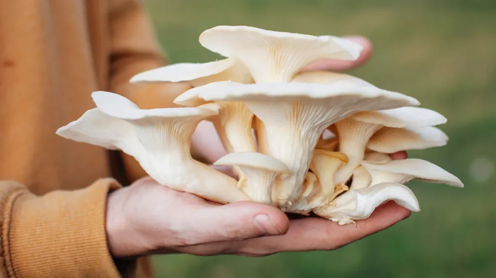
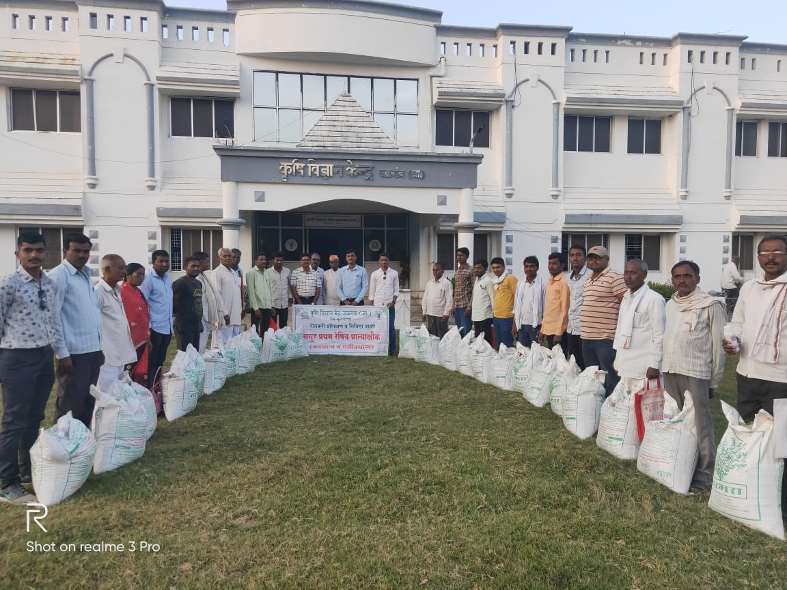
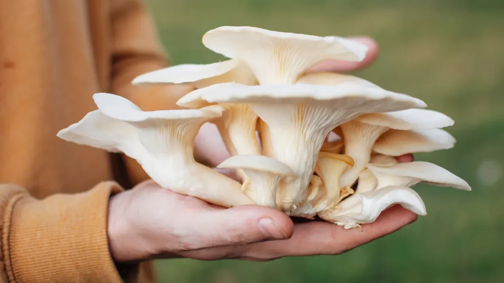
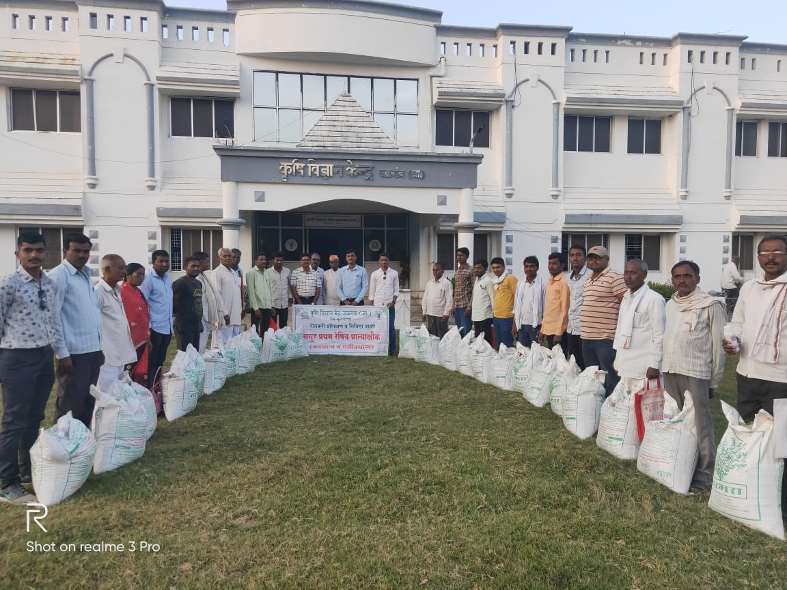
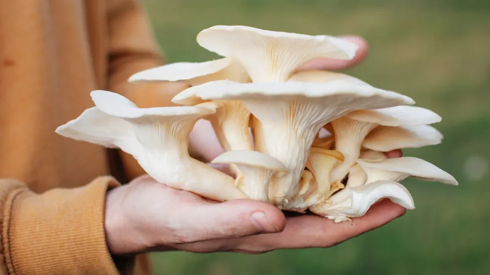
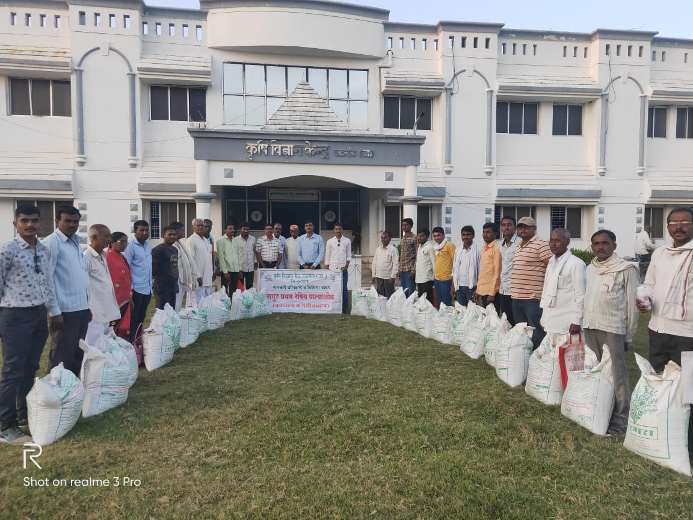

📸 Training Highlights
 



Krishi Vigyan Kendra, Jalgaon Jamod conducted skill development trainings under Agriculture Skill Council of India (ASCI) to empower rural youth with self-employment capabilities and practical agricultural skills.
Each program lasted 30 days (Feb 17 - Mar 22, 2020) with 20 participants, focusing on expert sessions, demos, and field visits.
Participants gained hands-on experience in nursery and mushroom units. Exposure visits enhanced their understanding and confidence in agriculture-based self-employment.

